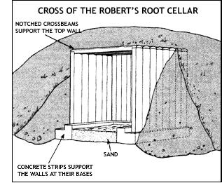

CLOCKWISE FROM TOP RIGHT: Wine will ""cellar"" well as long as the room's temperature remains above 40?F . . . . Spuds . . . winter squash . . . and apples are root cellar mainstays that can stay fresh for months!